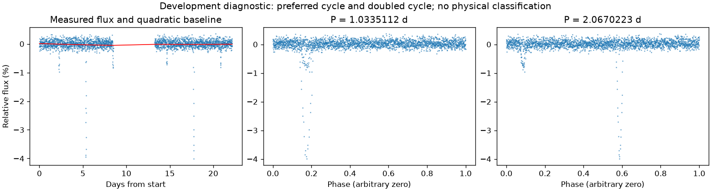
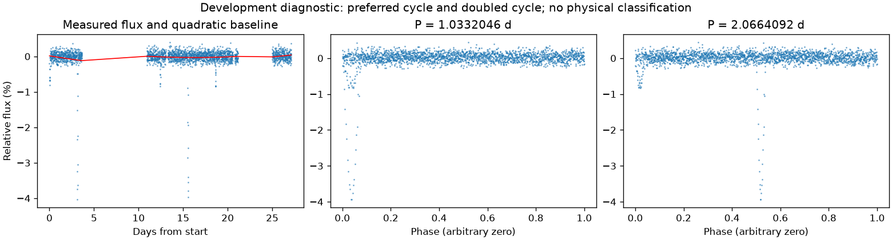

并非所有时段都支持重复变化
第二版周期：None 天；状态：not_established。

左图红线是缓慢基线；右面两图去除该基线。若未通过周期要求，两图只展示得分最高的竞争解释。
| 竞争周期（天） | 交替周期预测改善 | 两组各自改善 | 通过初筛 |
|---|---|---|---|
| 1.0335112 | 5.6% | -33.2% / 12.0% | 否 |
| 6.2061385 | 2.4% | 0.3% / 26.4% | 否 |
| 0.6202948 | 0.9% | 6.2% / -30.9% | 否 |
| 0.3097315 | -17.2% | -179.7% / -2.1% | 否 |
| 0.5167128 | -17.7% | -1.7% / -199.6% | 否 |
| 1.2399113 | -19.0% | -0.3% / -156.4% | 否 |
| 2.0663374 | -21.1% | -0.3% / -184.0% | 否 |
| 0.3873595 | -21.9% | -203.5% / -4.2% | 否 |
“预测改善”衡量用一组周期的形状预测另一组，比只有缓慢基线好多少；负数表示更差。搜索和预测共用了资料，因此这不是可信概率，也不是独立验证。
第二版周期：None 天；状态：not_established。

左图红线是缓慢基线；右面两图去除该基线。若未通过周期要求，两图只展示得分最高的竞争解释。
| 竞争周期（天） | 交替周期预测改善 | 两组各自改善 | 通过初筛 |
|---|---|---|---|
| 1.0332046 | 5.5% | -36.3% / 11.9% | 否 |
| 6.2020029 | 2.3% | 1.3% / 21.3% | 否 |
| 0.6199795 | 0.2% | -37.7% / 5.9% | 否 |
| 0.3097067 | -13.1% | -1.4% / -137.4% | 否 |
| 0.1552045 | -14.6% | -3.8% / -107.1% | 否 |
| 0.3871678 | -16.4% | -1.4% / -192.7% | 否 |
| 0.1940077 | -17.5% | -3.6% / -136.5% | 否 |
| 3.0991123 | -21.6% | -282.5% / 28.5% | 否 |
“预测改善”衡量用一组周期的形状预测另一组，比只有缓慢基线好多少；负数表示更差。搜索和预测共用了资料，因此这不是可信概率，也不是独立验证。